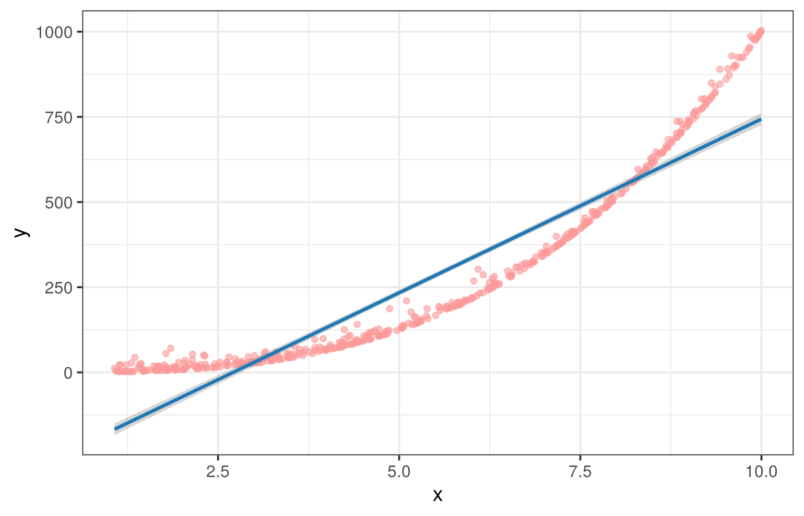
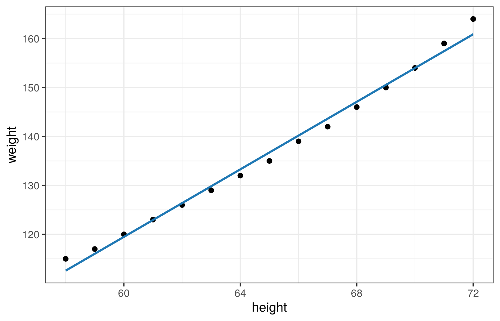
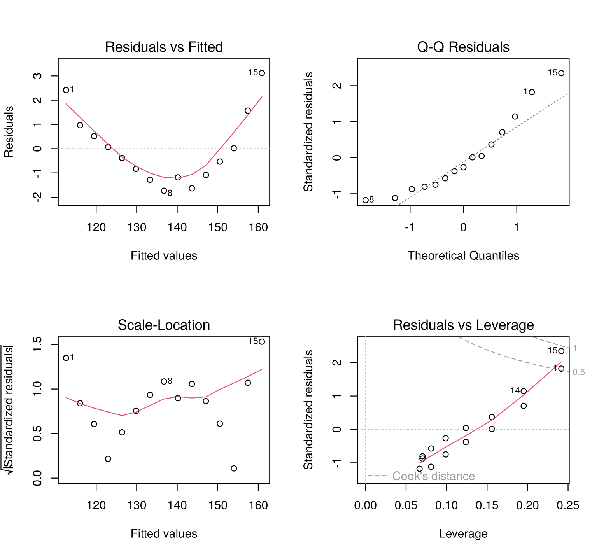
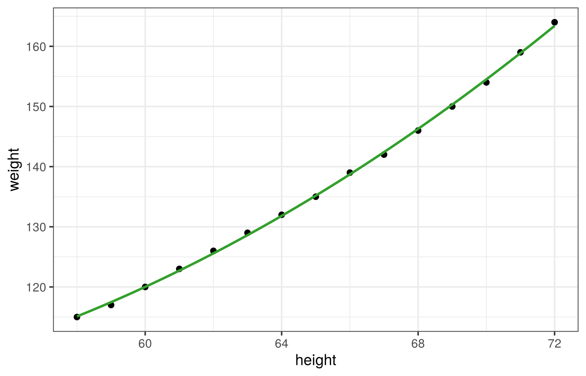
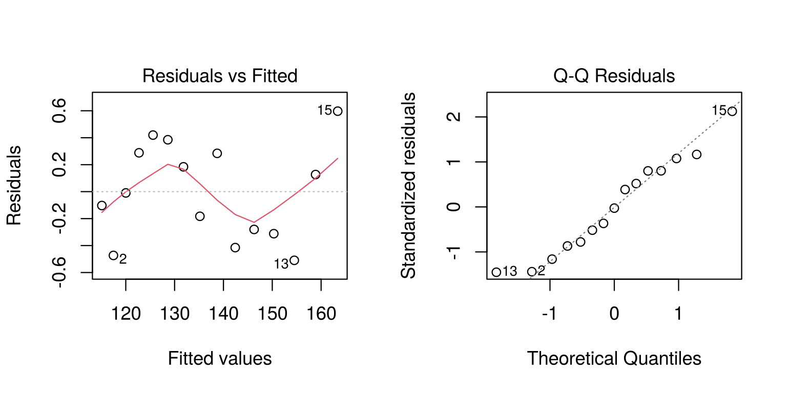

Session 10 of the course · Slides for this session
(PDF)
Learning goals. After this lesson you can
- distinguish Pearson and Spearman correlation and know when they
differ;
- explain why correlation does not imply causation (confounding and
reverse causation);
- fit, interpret and check a simple linear regression;
- extend a model with a polynomial term, and recognise
multicollinearity.
Correlation: two ways to measure association
We simulate a relationship that is strong but not linear:
x <- runif(500, 1, 10)
y <- x^3 + 8 * rchisq(500, df = 1)
sim <- data.frame(x, y)
ggplot(sim, aes(x, y)) +
geom_point(colour = pal[5], alpha = 0.6) +
geom_smooth(method = "lm", colour = pal[2])

cor(x, y, method = "pearson") # strength of the *linear* association
## [1] 0.937044
cor(x, y, method = "spearman") # strength of the *monotone* association
## [1] 0.9927364
##
## Pearson's product-moment correlation
##
## data: x and y
## t = 59.881, df = 498, p-value < 2.2e-16
## alternative hypothesis: true correlation is not equal to 0
## 95 percent confidence interval:
## 0.9253929 0.9469258
## sample estimates:
## cor
## 0.937044
Spearman’s correlation is based on ranks: it is close to 1 because
\(y\) almost always increases with
\(x\). Pearson’s correlation is lower
because the relationship is curved. The straight line in the plot misses
the shape, and the next sections show how to detect that.
Correlation does not imply causation
A correlation between two variables can arise without one causing the
other.
A confounding variable. Ice cream sales and drowning
accidents are correlated, but neither causes the other: both rise in hot
weather. In this simulation temperature drives both variables, and ice
cream has no effect on drowning at all.
n <- 300
temperature <- runif(n, 5, 35)
ice_cream <- 20 + 3 * temperature + rnorm(n, sd = 10)
drownings <- 1 + 0.2 * temperature + rnorm(n, sd = 1.5)
cor(ice_cream, drownings)
## [1] 0.6723672
coef(summary(lm(drownings ~ ice_cream)))["ice_cream", ]
## Estimate Std. Error t value Pr(>|t|)
## 5.380760e-02 3.431535e-03 1.568033e+01 8.021576e-41
coef(summary(lm(drownings ~ ice_cream + temperature)))["ice_cream", ]
## Estimate Std. Error t value Pr(>|t|)
## -0.008808475 0.008237078 -1.069368944 0.285771786
On its own, ice cream “predicts” drownings clearly. Once temperature
is in the model, the coefficient of ice cream is close to zero: the
association came from the confounding variable.
Reverse causation. Sometimes the direction is the
question. People who exercise more are happier, but happier people may
also be more inclined to exercise. People with depression have lower
vitamin D levels, but depression may lead people to spend less time
outdoors. The data alone do not tell us which way the arrow points.
Establishing causation needs more than a correlation: an experimental
design, or methods such as fixed-effects models and instrumental
variables that rest on explicit assumptions about how the data were
generated.
Simple linear regression
The built-in women data contain the average height
(inches) and weight (pounds) of American women aged 30–39.
fit <- lm(weight ~ height, data = women)
summary(fit)
##
## Call:
## lm(formula = weight ~ height, data = women)
##
## Residuals:
## Min 1Q Median 3Q Max
## -1.7333 -1.1333 -0.3833 0.7417 3.1167
##
## Coefficients:
## Estimate Std. Error t value Pr(>|t|)
## (Intercept) -87.51667 5.93694 -14.74 1.71e-09 ***
## height 3.45000 0.09114 37.85 1.09e-14 ***
## ---
## Signif. codes: 0 '***' 0.001 '**' 0.01 '*' 0.05 '.' 0.1 ' ' 1
##
## Residual standard error: 1.525 on 13 degrees of freedom
## Multiple R-squared: 0.991, Adjusted R-squared: 0.9903
## F-statistic: 1433 on 1 and 13 DF, p-value: 1.091e-14
The fitted equation is \(\widehat{\text{weight}} = -87.52 + 3.45 \times
\text{height}\): each additional inch of height is associated
with about 3.45 pounds more weight.
ggplot(women, aes(height, weight)) +
geom_point(size = 2) +
geom_smooth(method = "lm", se = FALSE, colour = pal[2])

Checking the assumptions
The residuals \(y - \hat{y}\) hold
what the model does not explain. If the model is adequate, they should
look like random noise.
par(mfrow = c(2, 2))
plot(fit)

- Linearity. Residuals vs Fitted (top left)
should show no pattern. Here it is clearly curved: the model misses part
of the relationship.
- Normality of residuals. The Q–Q plot (top
right) should follow the line.
- Constant variance. Scale–Location (bottom
left) should be a horizontal band.
- Independence cannot be checked from these plots: it
depends on how the data were collected.
Polynomial regression
The curved residual pattern suggests adding a quadratic term:
fit2 <- lm(weight ~ height + I(height^2), data = women)
summary(fit2)$coefficients
## Estimate Std. Error t value Pr(>|t|)
## (Intercept) 261.87818358 25.196770820 10.393323 2.356879e-07
## height -7.34831933 0.777692280 -9.448878 6.584476e-07
## I(height^2) 0.08306399 0.005979642 13.891131 9.322439e-09
c(linear = summary(fit)$adj.r.squared, quadratic = summary(fit2)$adj.r.squared)
## linear quadratic
## 0.9903183 0.9993859
ggplot(women, aes(height, weight)) +
geom_point(size = 2) +
geom_smooth(method = "lm", formula = y ~ x + I(x^2), se = FALSE, colour = pal[4])

par(mfrow = c(1, 2))
plot(fit2, which = 1:2)

The residual pattern is much weaker, and the adjusted \(R^2\) increases.
Multiple regression and multicollinearity
With several predictors, each coefficient is the association with the
outcome holding the other predictors constant. This becomes
unstable when predictors are strongly correlated with each other. We
simulate this situation: c is almost a copy of
a.
a <- runif(50, 80, 100)
b <- rnorm(50, 90, 2)
c <- 0.8 * a + rnorm(50)
d <- a - 0.2 * b + 2 * c + runif(50, 0, 10)
dat <- data.frame(a, b, c, d)
model <- summary(lm(d ~ a + b + c, data = dat))
model$coefficients
## Estimate Std. Error t value Pr(>|t|)
## (Intercept) 5.3956045 18.0255487 0.2993309 7.660359e-01
## a 1.2100463 0.2959468 4.0887287 1.724286e-04
## b -0.2991602 0.1994857 -1.4996575 1.405357e-01
## c 1.8566330 0.3671680 5.0566307 7.267129e-06
The true coefficients are 1 for a and 2 for
c, but the estimates have large standard errors: the data
cannot separate the two predictors’ contributions. The variance
inflation factor measures this. For a, it is \(1/(1 - R^2_a)\), where \(R^2_a\) comes from regressing
a on the other predictors:
r2_a <- summary(lm(a ~ b + c, data = dat))$r.squared
1 / (1 - r2_a)
## [1] 22.14144
vif(lm(d ~ a + b + c, data = dat))
## a b c
## 22.141437 1.025742 22.174015
A common rule of thumb treats VIF values above 5 or 10 as a warning
sign.
Try it yourself
- Repeat the multicollinearity simulation with
c <- 0.8 * a + rnorm(50, sd = 10). What happens to the
VIFs and the standard errors, and why?
- Using the built-in
mtcars data, regress fuel
consumption (mpg) on weight (wt). Interpret
the slope in words, then check the diagnostic plots.
- Add horsepower (
hp) to the model in exercise 2. How
does the coefficient of wt change, and how would you
explain the change to someone without statistical training?
LS0tCnRpdGxlOiAiQ29ycmVsYXRpb24gYW5kIGxpbmVhciByZWdyZXNzaW9uIgotLS0KCmBgYHtyIHNldHVwLCBpbmNsdWRlPUZBTFNFfQprbml0cjo6b3B0c19jaHVuayRzZXQoZWNobyA9IFRSVUUsIGZpZy53aWR0aCA9IDcsIGZpZy5oZWlnaHQgPSA0LjUsIGRwaSA9IDExMCwKICAgICAgICAgICAgICAgICAgICAgIG1lc3NhZ2UgPSBGQUxTRSkKbGlicmFyeShnZ3Bsb3QyKQpsaWJyYXJ5KFJDb2xvckJyZXdlcikKbGlicmFyeShjYXIpCnBhbCA8LSBicmV3ZXIucGFsKDgsICJQYWlyZWQiKQp0aGVtZV9zZXQodGhlbWVfYncoYmFzZV9zaXplID0gMTMpKQpzZXQuc2VlZCgxMCkKYGBgCgoqU2Vzc2lvbiAxMCBvZiB0aGUgW2NvdXJzZV0oaW5kZXguaHRtbCkgwrcgW1NsaWRlcyBmb3IgdGhpcyBzZXNzaW9uIChQREYpXShzbGlkZXMvMTAtcmVncmVzc2lvbi5wZGYpKgoKKipMZWFybmluZyBnb2Fscy4qKiBBZnRlciB0aGlzIGxlc3NvbiB5b3UgY2FuCgotIGRpc3Rpbmd1aXNoIFBlYXJzb24gYW5kIFNwZWFybWFuIGNvcnJlbGF0aW9uIGFuZCBrbm93IHdoZW4gdGhleSBkaWZmZXI7Ci0gZXhwbGFpbiB3aHkgY29ycmVsYXRpb24gZG9lcyBub3QgaW1wbHkgY2F1c2F0aW9uIChjb25mb3VuZGluZyBhbmQgcmV2ZXJzZSBjYXVzYXRpb24pOwotIGZpdCwgaW50ZXJwcmV0IGFuZCBjaGVjayBhIHNpbXBsZSBsaW5lYXIgcmVncmVzc2lvbjsKLSBleHRlbmQgYSBtb2RlbCB3aXRoIGEgcG9seW5vbWlhbCB0ZXJtLCBhbmQgcmVjb2duaXNlIG11bHRpY29sbGluZWFyaXR5LgoKIyMgQ29ycmVsYXRpb246IHR3byB3YXlzIHRvIG1lYXN1cmUgYXNzb2NpYXRpb24KCldlIHNpbXVsYXRlIGEgcmVsYXRpb25zaGlwIHRoYXQgaXMgc3Ryb25nIGJ1dCBub3QgbGluZWFyOgoKYGBge3IgY29yLXNpbX0KeCA8LSBydW5pZig1MDAsIDEsIDEwKQp5IDwtIHheMyArIDggKiByY2hpc3EoNTAwLCBkZiA9IDEpCnNpbSA8LSBkYXRhLmZyYW1lKHgsIHkpCgpnZ3Bsb3Qoc2ltLCBhZXMoeCwgeSkpICsKICBnZW9tX3BvaW50KGNvbG91ciA9IHBhbFs1XSwgYWxwaGEgPSAwLjYpICsKICBnZW9tX3Ntb290aChtZXRob2QgPSAibG0iLCBjb2xvdXIgPSBwYWxbMl0pCmBgYAoKYGBge3IgY29yLXZhbHVlc30KY29yKHgsIHksIG1ldGhvZCA9ICJwZWFyc29uIikgICAgIyBzdHJlbmd0aCBvZiB0aGUgKmxpbmVhciogYXNzb2NpYXRpb24KY29yKHgsIHksIG1ldGhvZCA9ICJzcGVhcm1hbiIpICAgIyBzdHJlbmd0aCBvZiB0aGUgKm1vbm90b25lKiBhc3NvY2lhdGlvbgpjb3IudGVzdCh4LCB5KQpgYGAKClNwZWFybWFuJ3MgY29ycmVsYXRpb24gaXMgYmFzZWQgb24gcmFua3M6IGl0IGlzIGNsb3NlIHRvIDEgYmVjYXVzZSAkeSQgYWxtb3N0CmFsd2F5cyBpbmNyZWFzZXMgd2l0aCAkeCQuIFBlYXJzb24ncyBjb3JyZWxhdGlvbiBpcyBsb3dlciBiZWNhdXNlIHRoZQpyZWxhdGlvbnNoaXAgaXMgY3VydmVkLiBUaGUgc3RyYWlnaHQgbGluZSBpbiB0aGUgcGxvdCBtaXNzZXMgdGhlIHNoYXBlLCBhbmQKdGhlIG5leHQgc2VjdGlvbnMgc2hvdyBob3cgdG8gZGV0ZWN0IHRoYXQuCgojIyMgQ29ycmVsYXRpb24gZG9lcyBub3QgaW1wbHkgY2F1c2F0aW9uCgpBIGNvcnJlbGF0aW9uIGJldHdlZW4gdHdvIHZhcmlhYmxlcyBjYW4gYXJpc2Ugd2l0aG91dCBvbmUgY2F1c2luZyB0aGUgb3RoZXIuCgoqKkEgY29uZm91bmRpbmcgdmFyaWFibGUuKiogSWNlIGNyZWFtIHNhbGVzIGFuZCBkcm93bmluZyBhY2NpZGVudHMgYXJlCmNvcnJlbGF0ZWQsIGJ1dCBuZWl0aGVyIGNhdXNlcyB0aGUgb3RoZXI6IGJvdGggcmlzZSBpbiBob3Qgd2VhdGhlci4gSW4gdGhpcwpzaW11bGF0aW9uIHRlbXBlcmF0dXJlIGRyaXZlcyBib3RoIHZhcmlhYmxlcywgYW5kIGljZSBjcmVhbSBoYXMgbm8gZWZmZWN0IG9uCmRyb3duaW5nIGF0IGFsbC4KCmBgYHtyIGNvbmZvdW5kaW5nfQpuIDwtIDMwMAp0ZW1wZXJhdHVyZSA8LSBydW5pZihuLCA1LCAzNSkKaWNlX2NyZWFtIDwtIDIwICsgMyAqIHRlbXBlcmF0dXJlICsgcm5vcm0obiwgc2QgPSAxMCkKZHJvd25pbmdzIDwtIDEgKyAwLjIgKiB0ZW1wZXJhdHVyZSArIHJub3JtKG4sIHNkID0gMS41KQpjb3IoaWNlX2NyZWFtLCBkcm93bmluZ3MpCmNvZWYoc3VtbWFyeShsbShkcm93bmluZ3MgfiBpY2VfY3JlYW0pKSlbImljZV9jcmVhbSIsIF0KY29lZihzdW1tYXJ5KGxtKGRyb3duaW5ncyB+IGljZV9jcmVhbSArIHRlbXBlcmF0dXJlKSkpWyJpY2VfY3JlYW0iLCBdCmBgYAoKT24gaXRzIG93biwgaWNlIGNyZWFtICJwcmVkaWN0cyIgZHJvd25pbmdzIGNsZWFybHkuIE9uY2UgdGVtcGVyYXR1cmUgaXMgaW4gdGhlCm1vZGVsLCB0aGUgY29lZmZpY2llbnQgb2YgaWNlIGNyZWFtIGlzIGNsb3NlIHRvIHplcm86IHRoZSBhc3NvY2lhdGlvbiBjYW1lIGZyb20KdGhlIGNvbmZvdW5kaW5nIHZhcmlhYmxlLgoKKipSZXZlcnNlIGNhdXNhdGlvbi4qKiBTb21ldGltZXMgdGhlIGRpcmVjdGlvbiBpcyB0aGUgcXVlc3Rpb24uIFBlb3BsZSB3aG8KZXhlcmNpc2UgbW9yZSBhcmUgaGFwcGllciwgYnV0IGhhcHBpZXIgcGVvcGxlIG1heSBhbHNvIGJlIG1vcmUgaW5jbGluZWQgdG8KZXhlcmNpc2UuIFBlb3BsZSB3aXRoIGRlcHJlc3Npb24gaGF2ZSBsb3dlciB2aXRhbWluIEQgbGV2ZWxzLCBidXQgZGVwcmVzc2lvbgptYXkgbGVhZCBwZW9wbGUgdG8gc3BlbmQgbGVzcyB0aW1lIG91dGRvb3JzLiBUaGUgZGF0YSBhbG9uZSBkbyBub3QgdGVsbCB1cyB3aGljaAp3YXkgdGhlIGFycm93IHBvaW50cy4KCkVzdGFibGlzaGluZyBjYXVzYXRpb24gbmVlZHMgbW9yZSB0aGFuIGEgY29ycmVsYXRpb246IGFuIGV4cGVyaW1lbnRhbCBkZXNpZ24sCm9yIG1ldGhvZHMgc3VjaCBhcyBmaXhlZC1lZmZlY3RzIG1vZGVscyBhbmQgaW5zdHJ1bWVudGFsIHZhcmlhYmxlcyB0aGF0IHJlc3Qgb24KZXhwbGljaXQgYXNzdW1wdGlvbnMgYWJvdXQgaG93IHRoZSBkYXRhIHdlcmUgZ2VuZXJhdGVkLgoKIyMgU2ltcGxlIGxpbmVhciByZWdyZXNzaW9uCgpUaGUgYnVpbHQtaW4gYHdvbWVuYCBkYXRhIGNvbnRhaW4gdGhlIGF2ZXJhZ2UgaGVpZ2h0IChpbmNoZXMpIGFuZCB3ZWlnaHQgKHBvdW5kcykKb2YgQW1lcmljYW4gd29tZW4gYWdlZCAzMOKAkzM5LgoKYGBge3Igc2xyfQpmaXQgPC0gbG0od2VpZ2h0IH4gaGVpZ2h0LCBkYXRhID0gd29tZW4pCnN1bW1hcnkoZml0KQpgYGAKClRoZSBmaXR0ZWQgZXF1YXRpb24gaXMKJFx3aWRlaGF0e1x0ZXh0e3dlaWdodH19ID0gYHIgcm91bmQoY29lZihmaXQpWzFdLCAyKWAgKyBgciByb3VuZChjb2VmKGZpdClbMl0sIDIpYCBcdGltZXMgXHRleHR7aGVpZ2h0fSQ6CmVhY2ggYWRkaXRpb25hbCBpbmNoIG9mIGhlaWdodCBpcyBhc3NvY2lhdGVkIHdpdGggYWJvdXQKYHIgcm91bmQoY29lZihmaXQpWzJdLCAyKWAgcG91bmRzIG1vcmUgd2VpZ2h0LgoKYGBge3Igc2xyLXBsb3R9CmdncGxvdCh3b21lbiwgYWVzKGhlaWdodCwgd2VpZ2h0KSkgKwogIGdlb21fcG9pbnQoc2l6ZSA9IDIpICsKICBnZW9tX3Ntb290aChtZXRob2QgPSAibG0iLCBzZSA9IEZBTFNFLCBjb2xvdXIgPSBwYWxbMl0pCmBgYAoKIyMjIENoZWNraW5nIHRoZSBhc3N1bXB0aW9ucwoKVGhlIHJlc2lkdWFscyAkeSAtIFxoYXR7eX0kIGhvbGQgd2hhdCB0aGUgbW9kZWwgZG9lcyBub3QgZXhwbGFpbi4gSWYgdGhlIG1vZGVsCmlzIGFkZXF1YXRlLCB0aGV5IHNob3VsZCBsb29rIGxpa2UgcmFuZG9tIG5vaXNlLgoKYGBge3Igc2xyLWRpYWdub3N0aWNzLCBmaWcuaGVpZ2h0ID0gNi41fQpwYXIobWZyb3cgPSBjKDIsIDIpKQpwbG90KGZpdCkKcGFyKG1mcm93ID0gYygxLCAxKSkKYGBgCgoxLiAqKkxpbmVhcml0eS4qKiAqUmVzaWR1YWxzIHZzIEZpdHRlZCogKHRvcCBsZWZ0KSBzaG91bGQgc2hvdyBubyBwYXR0ZXJuLiBIZXJlCiAgIGl0IGlzIGNsZWFybHkgY3VydmVkOiB0aGUgbW9kZWwgbWlzc2VzIHBhcnQgb2YgdGhlIHJlbGF0aW9uc2hpcC4KMi4gKipOb3JtYWxpdHkgb2YgcmVzaWR1YWxzLioqIFRoZSAqUeKAk1EgcGxvdCogKHRvcCByaWdodCkgc2hvdWxkIGZvbGxvdyB0aGUgbGluZS4KMy4gKipDb25zdGFudCB2YXJpYW5jZS4qKiAqU2NhbGXigJNMb2NhdGlvbiogKGJvdHRvbSBsZWZ0KSBzaG91bGQgYmUgYSBob3Jpem9udGFsCiAgIGJhbmQuCjQuICoqSW5kZXBlbmRlbmNlKiogY2Fubm90IGJlIGNoZWNrZWQgZnJvbSB0aGVzZSBwbG90czogaXQgZGVwZW5kcyBvbiBob3cgdGhlIGRhdGEKICAgd2VyZSBjb2xsZWN0ZWQuCgojIyBQb2x5bm9taWFsIHJlZ3Jlc3Npb24KClRoZSBjdXJ2ZWQgcmVzaWR1YWwgcGF0dGVybiBzdWdnZXN0cyBhZGRpbmcgYSBxdWFkcmF0aWMgdGVybToKCmBgYHtyIHBvbHl9CmZpdDIgPC0gbG0od2VpZ2h0IH4gaGVpZ2h0ICsgSShoZWlnaHReMiksIGRhdGEgPSB3b21lbikKc3VtbWFyeShmaXQyKSRjb2VmZmljaWVudHMKYyhsaW5lYXIgPSBzdW1tYXJ5KGZpdCkkYWRqLnIuc3F1YXJlZCwgcXVhZHJhdGljID0gc3VtbWFyeShmaXQyKSRhZGouci5zcXVhcmVkKQpgYGAKCmBgYHtyIHBvbHktcGxvdH0KZ2dwbG90KHdvbWVuLCBhZXMoaGVpZ2h0LCB3ZWlnaHQpKSArCiAgZ2VvbV9wb2ludChzaXplID0gMikgKwogIGdlb21fc21vb3RoKG1ldGhvZCA9ICJsbSIsIGZvcm11bGEgPSB5IH4geCArIEkoeF4yKSwgc2UgPSBGQUxTRSwgY29sb3VyID0gcGFsWzRdKQpgYGAKCmBgYHtyIHBvbHktZGlhZ25vc3RpY3MsIGZpZy5oZWlnaHQgPSAzLjV9CnBhcihtZnJvdyA9IGMoMSwgMikpCnBsb3QoZml0Miwgd2hpY2ggPSAxOjIpCnBhcihtZnJvdyA9IGMoMSwgMSkpCmBgYAoKVGhlIHJlc2lkdWFsIHBhdHRlcm4gaXMgbXVjaCB3ZWFrZXIsIGFuZCB0aGUgYWRqdXN0ZWQgJFJeMiQgaW5jcmVhc2VzLgoKIyMgTXVsdGlwbGUgcmVncmVzc2lvbiBhbmQgbXVsdGljb2xsaW5lYXJpdHkKCldpdGggc2V2ZXJhbCBwcmVkaWN0b3JzLCBlYWNoIGNvZWZmaWNpZW50IGlzIHRoZSBhc3NvY2lhdGlvbiB3aXRoIHRoZSBvdXRjb21lCipob2xkaW5nIHRoZSBvdGhlciBwcmVkaWN0b3JzIGNvbnN0YW50Ki4gVGhpcyBiZWNvbWVzIHVuc3RhYmxlIHdoZW4gcHJlZGljdG9ycwphcmUgc3Ryb25nbHkgY29ycmVsYXRlZCB3aXRoIGVhY2ggb3RoZXIuIFdlIHNpbXVsYXRlIHRoaXMgc2l0dWF0aW9uOiBgY2AgaXMKYWxtb3N0IGEgY29weSBvZiBgYWAuCgpgYGB7ciBjb2xsaW5lYXJ9CmEgPC0gcnVuaWYoNTAsIDgwLCAxMDApCmIgPC0gcm5vcm0oNTAsIDkwLCAyKQpjIDwtIDAuOCAqIGEgKyBybm9ybSg1MCkKZCA8LSBhIC0gMC4yICogYiArIDIgKiBjICsgcnVuaWYoNTAsIDAsIDEwKQpkYXQgPC0gZGF0YS5mcmFtZShhLCBiLCBjLCBkKQoKbW9kZWwgPC0gc3VtbWFyeShsbShkIH4gYSArIGIgKyBjLCBkYXRhID0gZGF0KSkKbW9kZWwkY29lZmZpY2llbnRzCmBgYAoKVGhlIHRydWUgY29lZmZpY2llbnRzIGFyZSAxIGZvciBgYWAgYW5kIDIgZm9yIGBjYCwgYnV0IHRoZSBlc3RpbWF0ZXMgaGF2ZSBsYXJnZQpzdGFuZGFyZCBlcnJvcnM6IHRoZSBkYXRhIGNhbm5vdCBzZXBhcmF0ZSB0aGUgdHdvIHByZWRpY3RvcnMnIGNvbnRyaWJ1dGlvbnMuClRoZSAqKnZhcmlhbmNlIGluZmxhdGlvbiBmYWN0b3IqKiBtZWFzdXJlcyB0aGlzLiBGb3IgYGFgLCBpdCBpcwokMS8oMSAtIFJeMl9hKSQsIHdoZXJlICRSXjJfYSQgY29tZXMgZnJvbSByZWdyZXNzaW5nIGBhYCBvbiB0aGUgb3RoZXIKcHJlZGljdG9yczoKCmBgYHtyIHZpZn0KcjJfYSA8LSBzdW1tYXJ5KGxtKGEgfiBiICsgYywgZGF0YSA9IGRhdCkpJHIuc3F1YXJlZAoxIC8gKDEgLSByMl9hKQp2aWYobG0oZCB+IGEgKyBiICsgYywgZGF0YSA9IGRhdCkpCmBgYAoKQSBjb21tb24gcnVsZSBvZiB0aHVtYiB0cmVhdHMgVklGIHZhbHVlcyBhYm92ZSA1IG9yIDEwIGFzIGEgd2FybmluZyBzaWduLgoKIyMgVHJ5IGl0IHlvdXJzZWxmCgoxLiBSZXBlYXQgdGhlIG11bHRpY29sbGluZWFyaXR5IHNpbXVsYXRpb24gd2l0aCBgYyA8LSAwLjggKiBhICsgcm5vcm0oNTAsIHNkID0gMTApYC4KICAgV2hhdCBoYXBwZW5zIHRvIHRoZSBWSUZzIGFuZCB0aGUgc3RhbmRhcmQgZXJyb3JzLCBhbmQgd2h5PwoyLiBVc2luZyB0aGUgYnVpbHQtaW4gYG10Y2Fyc2AgZGF0YSwgcmVncmVzcyBmdWVsIGNvbnN1bXB0aW9uIChgbXBnYCkgb24gd2VpZ2h0CiAgIChgd3RgKS4gSW50ZXJwcmV0IHRoZSBzbG9wZSBpbiB3b3JkcywgdGhlbiBjaGVjayB0aGUgZGlhZ25vc3RpYyBwbG90cy4KMy4gQWRkIGhvcnNlcG93ZXIgKGBocGApIHRvIHRoZSBtb2RlbCBpbiBleGVyY2lzZSAyLiBIb3cgZG9lcyB0aGUgY29lZmZpY2llbnQgb2YKICAgYHd0YCBjaGFuZ2UsIGFuZCBob3cgd291bGQgeW91IGV4cGxhaW4gdGhlIGNoYW5nZSB0byBzb21lb25lIHdpdGhvdXQKICAgc3RhdGlzdGljYWwgdHJhaW5pbmc/Cg==
Jiayun Jin · Text and figures licensed under CC BY 4.0; code under the MIT License.